한국건설기술연구원 지반연구본부 세미나
2026. 11.
KICT Seminar
필드로봇에서의
AI활용
이한민 산업기계DX연구실장
한국기계연구원
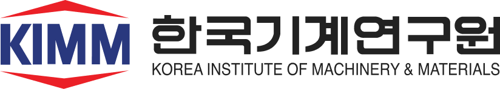
AI, 로봇, 그리고 산업기계
산업마다 무인화와 자율화 요구가 먼저 있었고, ChatGPT 모멘트가 그것을 가속
프로그래밍에서 학습으로의 전환
데이터와 경험으로 학습해, 더 다양한 작업과 환경에 대응
→
학습 중심
시연·경험→학습→실행
Figure Helix 2.5 (2026.09)
행동 생성의 두 접근: VLA와 WAM
이해를 행동으로 연결하는 VLA · 미래를 예측해 행동하는 WAM
VLAVision-Language-Action
장면·언어 지시
로봇 상태
→
시각·언어
이해
→
행동 생성
Chef Robotics · Physical Intelligence Pi API
햄버거 조립
WAMWorld Action Model
장면·언어 지시
로봇 상태
→
미래 예측
활용
→
행동 생성
1X World Model · NEO
티슈 뽑기
로봇 두뇌의 구성 방식
하나의 모델이 행동을 직접 출력하거나, 이해와 제어를 나누어 처리
행동 직접 출력Google DeepMind RT-2 (2023)
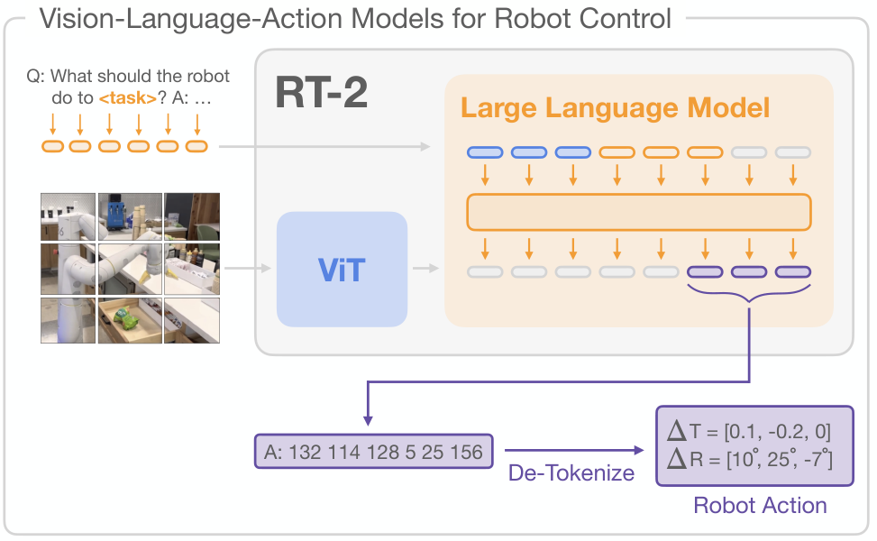
↑지시와 영상 입력
↑행동 토큰을 로봇 동작으로
영상과 지시를 받아 하나의 VLA 모델이 행동 토큰을 직접 출력
이해와 제어 역할 분담Figure Helix (2025.02)
System 2가 장면과 지시를 이해, System 1이 연속 동작으로 변환
로봇 학습의 데이터 격차
인터넷에 축적된 지식에 비해, 로봇의 행동 경험은 부족
Goldberg (2025)의 당시 비교
약 10만 년
학습용 글과 그림을 사람이 읽고 보는 시간
약 1년
당시 최대 원격조작 데이터셋의 누적 기록 시간
로봇에는 관찰, 행동, 결과가 연결된 경험이 필요
학습 데이터의 확보와 확장
로봇으로 수집하고, 사람에게서 배우고, 합성 데이터로 확장
1텔레오퍼레이션
Stanford, Mobile ALOHA (2024)
사람 조작으로 관찰과 행동 기록
+
2사람 영상 기반 학습
Figure, Project Go-Big (2025.09)
1인칭 영상으로 로봇 이동 학습
+
3합성 데이터 생성
NVIDIA, DexMimicGen (2024)
소수 시연을 시뮬레이션에서 증강
시뮬레이션 증강월드 모델 생성
다양한 경험으로 확장하고, 실제 작업으로 보정하고 검증
현장 적용의 조건
현장의 기준은 안정적인 작업 완수, 지속적인 가동, 비용 대비 생산성
1작업 신뢰도
Telexistence, 일본 편의점 음료 진열
운영자 1명이 약 50대 감시
물건을 떨어뜨리는 등 예외 상황은
원격 운영자가 복구
→
2운영 지속성
Figure 02, BMW 스파턴버그 공장
누적 1,250시간+, 부품 9만 개+
가동률이 아닌 11개월 누적 실적
주요 고장 지점인 전완부 재설계
→
3경제성
Rosendin, 미국 태양광 현장시험
2인 작업조, 8시간 350–400장
3–4인 수작업조 대비 3배 속도
생산성 개선 사례, 투자회수는 별도
작업 성공뿐 아니라, 실패해도 복구하고 계속 운영할 수 있어야 현장 적용
기계연 로봇 연구의 발전
휴머노이드, 필드로봇, 의료로봇으로 확장되는 기계 지능
휴머노이드 카이로스
이동과 조작을 위한 로봇 플랫폼과 핵심부품 개발
2026 글로벌 기계기술 포럼 2026. 9. 7.
카이로스 V0.7 탈춤 시연
로드맵2027.4V1▶2030.4V2 초감각, 전신감각▶2035실용화
구동기
2.1kg으로
최대 192 N·m
전용 구동기 5종 자체 설계, 성능 20% 향상
로봇 핸드
핀셋을 쥐고
작은 부품까지
오랜 핸드 연구의 축적
촉각 피부 차별점
쓰다듬는 손길까지
감지
3축 촉각, 자가회복 피부
로봇 작업지능과 학습 데이터
사람의 시연을 학습해 다양한 작업으로 확장
1시연 수집
2이해와 계획
3작업 수행 RoGeTA
데이터 팩토리
휴머노이드 여러 대의 동시 시연 수집 환경
▶
명령 이해언어·시각 모델
작업 계획순서 수립과 검증
동작 조합집기, 놓기, 복구
▶
의료로봇
정밀조작과 원격제어로 의료 역량 확장
정밀조작최소침습 카테터 수술로봇
심장 모형 속 카테터
가는 관 끝을 떨림 없이 원하는 방향으로 조향
원격제어울릉도–대구 원격 초음파
의사 · 조작
⇄295 km왕복 지연
약 40 ms
로봇 · 초음파
의사의 손 조작을 먼 곳의 로봇이 따라 초음파 영상 획득
디지털트윈
실제 장비와 가상 트윈을 실시간 연동해 학습·최적화
실제 장비디지털트윈
자율주행 트랙터 — 실차 작업을 트윈에서 실시간 관제
디지털트윈실제 설비
공작기계 자율제조 셀 — 설비·로봇 동작을 트윈과 연동
美 Digital Twin Consortium공식 테스트베드
MANDATE-R2R 이차전지 롤투롤 자율제조
실제 설비와 트윈을 실시간 연동, 다중 AI 에이전트가 공정을 스스로 최적화 · 2025.12 등록
Field Robotics — 비정형·옥외 환경에서 일하는 모든 로봇
Construction건설
굴착기 · 휠로더 · 도저
Agriculture농업
트랙터 · 과수 모니터링
Disaster · Defense재난·국방
탐색구조 · 정찰
Urban Infra.도시 인프라
하수도 · 터널 점검
현장의 4대 도전과제
01Uncertainty불확실성
토질 · 흙의 밀도 · 식생 · 기상이 매 작업마다 다름
02Partial Observability부분관측
지하 매설물 · 가려진 장애물 · 먼지로 인한 센서 저하
03Dynamic World동적 환경
작업이 진행될수록 지형 자체가 바뀜 (굴착·운반)
04Safety & Trust안전과 신뢰
30톤 굴착기가 작업자 옆에서 움직임
4계층으로 보는 Field Robot AI
L1Perception & World Model환경을 이해Multi-Modal Fusion · NeRF · SAM
L2Task Reasoning무엇을 할지 결정LLM · VLM · Foundation Models
L3Planning & Decision어디서 · 어떻게 할지RL · Imitation Learning · Diffusion Policy
L4Control물리 제약 안에서 실행MPC · Learned Residuals · Safety Layer
3D 지형을 어떻게 표현할 것인가
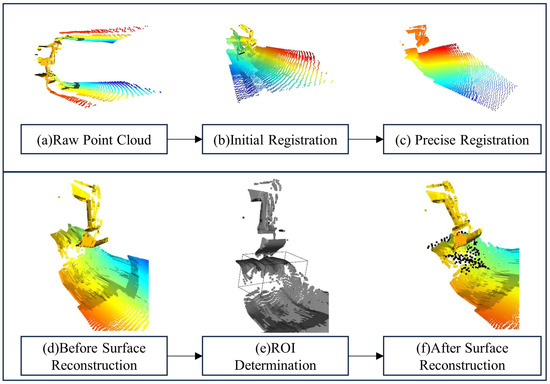
2.5D Height Map
격자 셀당 높이의 평균·분산
실시간 갱신 · 굴착 계획의 기본 입력
Point Cloud
LiDAR 원본 데이터
정밀하지만 계산 비용 ↑
NeRF / 3D Gaussian Splatting
미분 가능한 3D 재구성
시뮬레이션 합성 데이터 생성
Occupancy Networks
3D 공간의 점유 여부 예측
Key Takeaway단일 센서가 아닌 자세추정 + 다중 센서 점군을 한 지도에 누적
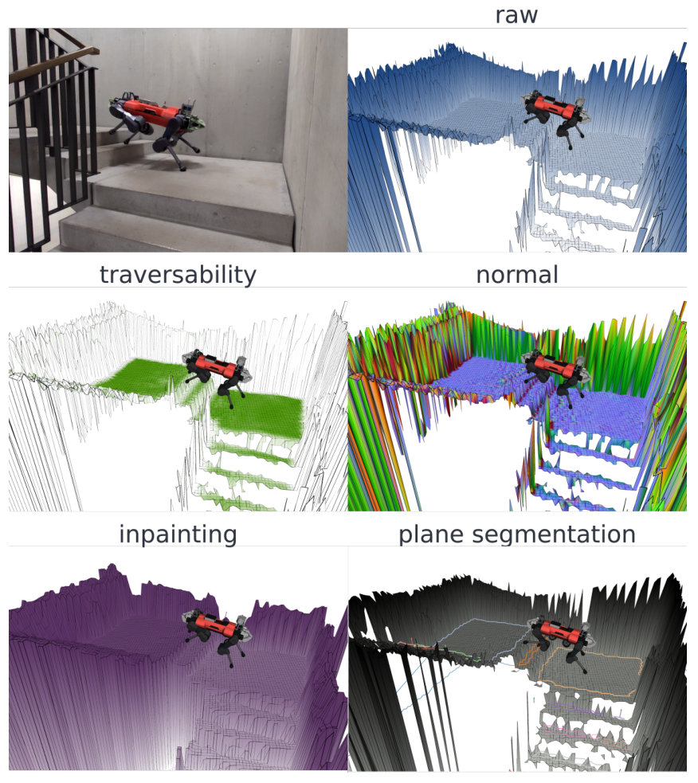
외부 연구 · GPU 고도지도
점군 + 자세 → 셀마다 높이·분산을 칼만 방식으로 갱신
주행가능성·법선 등 다층 격자Miki et al., ETH Zurich, 2022 · Fig. 1
현장은 깨끗하지 않다 — 눈 · 비 · 분진 · 진흙
확률 기반 노이즈 제거
섹션별 노이즈 점군 밀도를 추정하여 제거
다중 모달 융합
단일 센서 실패를 다른 센서가 보완
센서 클리닝
진흙 · 흙탕물 대응 물리적 클리닝
옥외 인지에 들어온 Vision FMs
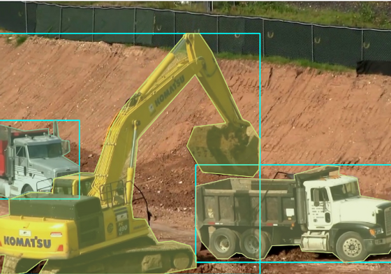
ZERO-SHOT 분할SAM / SAM 2
점·박스 프롬프트 → 객체 마스크
사전학습 특징DINOv2 / CLIP
사전학습 특징을 활용
단안 깊이 추정Depth Anything
단안 상대 깊이 — 실측량엔 스케일 보정
자연어 쿼리Open-Vocabulary Det.
"흙더미 옆 사람", "노란 안전모"
→ 자동 마스크·박스 제안으로 라벨링 보조 — 현장 성능은 별도 검증
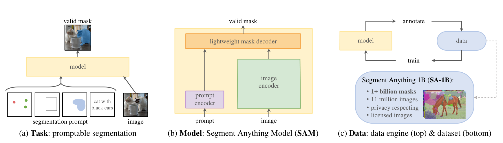
외부 연구 · Segment Anything — 프롬프트 기반 분할 모델과 SA-1B 데이터 엔진 (Kirillov et al., Meta AI, 2023 · Fig. 1)
GPS가 안 되는 곳에서 어떻게 위치를 알까
LIO-SAM / FAST-LIO
LiDAR + IMU 융합
과수원 · 터널 · 실내
Visual-Inertial Odom.
카메라 + IMU
경량 플랫폼용
Learning-based loop closure
변화하는 지형에서도 재인식
계절 변화 대응
RTK + IMU Fusion
cm급 정밀도
GPS 단절 시 IMU 보완
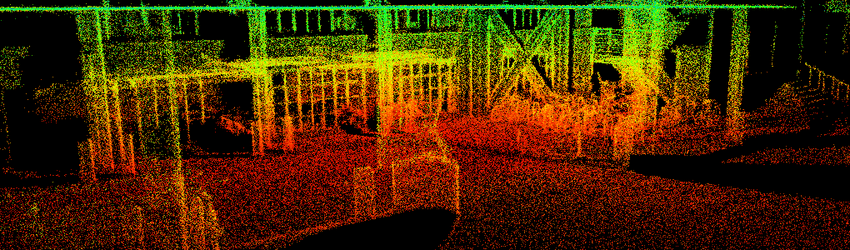
휴리스틱에서 학습 기반 결정으로
| APPROACH | EXAMPLES | LIMITATION |
|---|
| 01 | 기하학적 경로계획 | Dubins · A* · RRT | 정적 가정 · 비용함수 수동 |
| 02 | 최적화 기반 제어 | MPC · Trajectory Opt. | 모델 의존 · 비선형 한계 |
| 03 | 학습 기반 | Imitation · RL · Diffusion | 데이터 의존 |
| 04 | LLM-as-planner | VLA · SayCan · PaLM-E | 자연어 미션 → 행동 시퀀스 |
숙련자에게 배우기 IMITATION LEARNING
왜 시연인가
- 숙련자의 관측·조작 데이터로 학습
- 보상함수 설계가 어려운 작업 (정밀 그레이딩)
- retrofit 장비로 일반 작업 중 시연 기록 (제안)
대표 기법
Behavior Cloning · DAgger기본 시연 모방
Diffusion Policy다봉 행동 분포 생성
ACT · VQ-BeTAction Chunking, 토큰화
Offline RL + Demos시연 + RL 결합
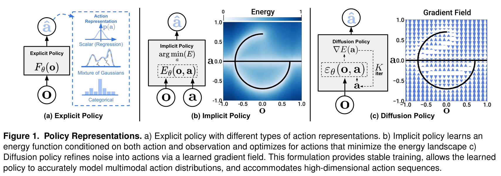
Diffusion Policy — 잡음에서 행동 시퀀스를 생성해 다봉 분포 표현 (Chi et al., Fig. 1)
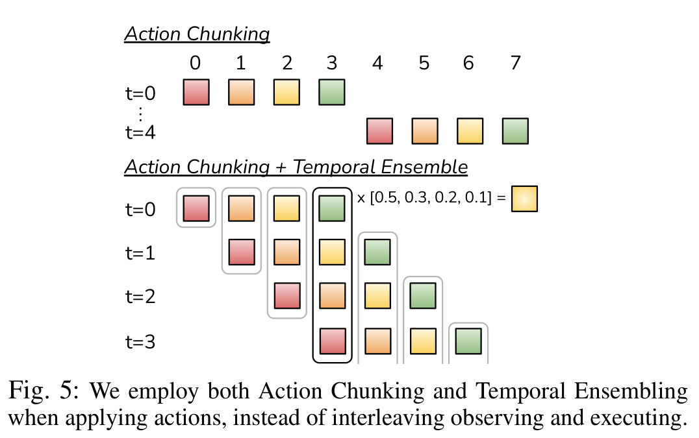
ACT — k스텝 행동 묶음 + 시간 앙상블 (Zhao et al. 2023, Fig. 5)
옥외에서 강화학습이 통하려면
Massively Parallel Sim
Isaac Gym · Isaac Sim · MuJoCo MJX
수천 개 로봇을 GPU 한 대에서 동시에 학습
Domain Randomization
Friction · Push · Noise · Soil
마찰·외란·센서잡음, 굴착은 토양 물성 범위를 무작위화
Real-to-Sim-to-Real
실기 로그 → 유압 모델 학습 · NeRF / GS
실측으로 시뮬레이터를 보정


학습이 모델 기반을 대체하지 않는다
MPC가 여전히 핵심인 이유
- 유압 동력·펌프 유량·실린더 변위 제약을 최적화에 명시
- Augmented Lagrangian DDP 기반 MPC — 평균 21.7 ms (시뮬레이션)
- 토양 반력·유압 마찰은 외란추정으로 실시간 반영
- 학습은 모델 보완 — 실기 로그로 유압 동역학 학습 (ETH)
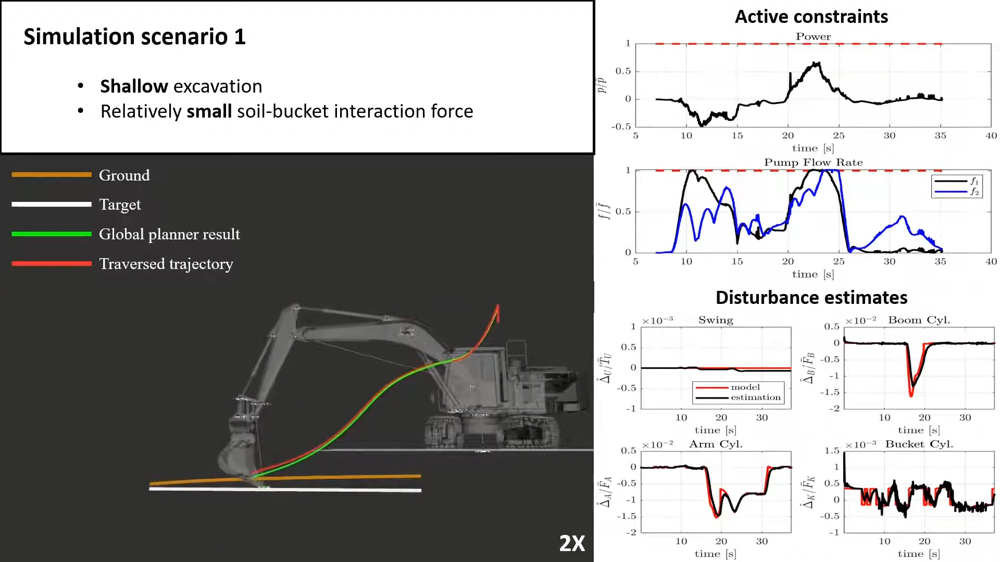
[SNU21] Lee, Jang et al., IROS 2021
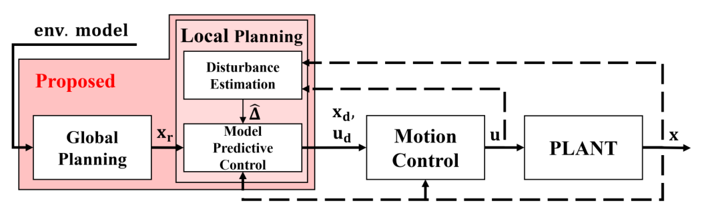
한 모델로 모두 풀지 않는다 — 계층 분리
UPPER · LLM REASONING
자연어 명령 → 작업 분해
- 의존관계 · 선행조건 검증
- 원자적 자율 작업 블록 (atomic blocks) 정의
- 기계 간 협업 조율 (팀 운용)
LOWER · E2E POLICY
Visuomotor 행동 생성
- 환경 인식 (점군 · 카메라)
- 기계 제어 (굴삭 · 적재 · 이동)
- 물리 상호작용 (토질 · 경사 적응)
→ 상위(언어)와 하위(운동)는 다른 추론 빈도와 다른 학습 데이터를 요구
Sim-to-Real Gap — 여전히 가장 큰 적
PROBLEM
- 토양 · 유압의 비선형성은 시뮬레이션이 약함
- 조건이 바뀌면 정책 성능 저하 (OOD)
- 드물고 위험한 상황은 시뮬만으로 검증 불충분
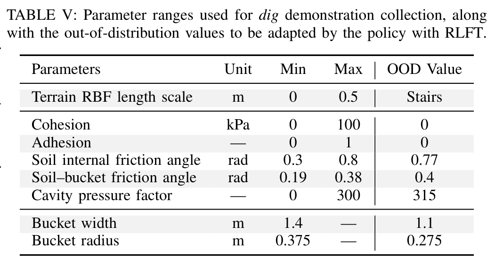
외부 연구 · 굴착 RL의 토양 물성 무작위화 범위 (ETH ExT 2025, Table V)EMERGING SOLUTIONS
Differentiable SimulationBrax · Genesis · MuJoCo MJX (강체 중심)
Real-to-Sim형상: NeRF · 3DGS 재구성 / 동역학: 실기 로그로 유압 모델 학습
Soil Parameter Randomization점착력 · 내부마찰각 · 버킷 마찰각 범위로 학습
Foundation Pretraining사전학습 + 미세조정으로 새 조건 적응 비용 ↓
3. 협업 크레인 교량 구조물 자동운반 기술
기술적 성과
▪다중 크레인 자동운반 통합제어 시스템 개발 (위치 오차 수평/수직 ±５cm)
▪라이다 기반 충돌방지용 환경탐지 시스템 개발
▪Multi-RRT 기반 다중 크레인 거더 이송 경로계획 알고리즘 개발
▪거더 자동운반 제어 축소 크레인 실증
AI Frontiers Summit 2026 「AI Technologies for Field Robotics」(KIMM 이한민) #36
4. 굴착기 및 휠로더 원격제어 기술
한국기계연구원
▪기계식 굴착기 및 휠로더 전자제어 인터페이스 개발 (retrofit kit) - 비례제어밸브 모듈/임베디드 컨트롤러/ GNSS/ IMU/ 압력계 포함
▪굴착기 및 휠로더 작업 장치 위치 제어 기술 개발
▪전자식 비례제어 밸브 정밀 압력 제어 및 인공지능 기반 고장 진단 기술 개발 - Pilot 압력 제어 hysteresis 제거, 고장검출 정확도 90% 이상
공동연구개발기관:
-다산네트웍스 (주관)
-쿠오핀
-다온링크
-한국생산기술연구원
-한국기계연구원
AI Frontiers Summit 2026 「AI Technologies for Field Robotics」(KIMM 이한민) #37
4. 굴착기 및 휠로더 원격제어 기술
AI Frontiers Summit 2026 「AI Technologies for Field Robotics」(KIMM 이한민) #38
5. 과수 농장 작물 모니터링을 위한 자율 농업기계
AI Frontiers Summit 2026 「AI Technologies for Field Robotics」(KIMM 이한민) #40
5. 과수 농장 작물 모니터링을 위한 자율 농업기계
Origin: Initial position of SLAM
AI Frontiers Summit 2026 「AI Technologies for Field Robotics」(KIMM 이한민) #42
7. 무인이동체 원천기술개발 － 육해공 자율협력
AI Frontiers Summit 2026 「AI Technologies for Field Robotics」(KIMM 이한민) #47
8. 화재현장 실내수색 무인이동체 개발
프로토타입-UGV 플랫폼 간 정책 전이 기술 개발
상용 휠 레그 로봇에서 통합 UGV 플랫폼으로 도메인간 전환 기술 개발
상용 휠 레그 로봇을 이용해 학습된 제어 기술을, 통합 UGV 플랫폼으로 전이 시킬 수 있는 도메인간 전환 기술 개발
휠 레그 로봇의 형태학적 유사성을 이용해, 시뮬레이션 간 정책 전환 및 시뮬레이션에서 실제 환경으로의 전환 추진
제어기 학습을 위한 병렬 연산 시뮬레이션 환경
AI Frontiers Summit 2026 「AI Technologies for Field Robotics」(KIMM 이한민) #51
1. 숙련자 데이터 및 인공지능 기반 자율작업 굴착기
AI 기반 무인 굴착기 자율작업 계획 및 제어
AI Frontiers Summit 2026 「AI Technologies for Field Robotics」(KIMM 이한민) #28
1. 숙련자 데이터 및 인공지능 기반 자율작업 굴착기
AI Frontiers Summit 2026 「AI Technologies for Field Robotics」(KIMM 이한민) #29
1. 숙련자 데이터 및 인공지능 기반 자율작업 굴착기
•2D 그리드 맵 기반의 작업계획(Dig/Dump/Leveling) 강화학습 모델(PPO) 개발
•보상 함수 : 1회 굴착량 최대화, 평균 높이 목표 도달 여부, 이동거리 최소화
2D 그리드 맵 기반 작업계획 강화학습 기술 개발
<강화학습 기반 평탄화 Dumping 작업 시퀀스 >
<강화학습 기반 평탄화 Leveling 작업 시퀀스 >
AI Frontiers Summit 2026 「AI Technologies for Field Robotics」(KIMM 이한민) #30
1. 숙련자 데이터 및 인공지능 기반 자율작업 굴착기
•Vortex Studio 및 ROS2 기반의 토공작업 가상환경 구축
•환경 인식 모듈, 상위 계획 모듈 (2D 그리드 생성/강화학습/작업 관리/경로생성),
하위 제어 모듈(역기구학, PID제어)로 구성
AI Frontiers Summit 2026 「AI Technologies for Field Robotics」(KIMM 이한민) #31
1. 숙련자 데이터 및 인공지능 기반 자율작업 굴착기
< 가상환경 내 굴착기 자율작업 1-cycle 프로세스 구현 >
AI Frontiers Summit 2026 「AI Technologies for Field Robotics」(KIMM 이한민) #32
1. 숙련자 데이터 및 인공지능 기반 자율작업 굴착기
AI Frontiers Summit 2026 「AI Technologies for Field Robotics」(KIMM 이한민) #33
지반 특성 이해를 위한 협업 제안
지반 사전정보지반조사 · 시추 · 토질 물성KICT 지반연구본부
굴착 작업계획그리드 지도 · 작업 순서 · 궤적
작업 중 관측점군 지형 변화 · 유압 압력 · 자세KIMM 자율작업 굴착기
땅을 미리 아는 정보와 파면서 아는 정보를 함께 쓰는 굴착 — 공동연구 제안
발표자 제안(협의 전) · 관측 항목 근거: 원본 #29 센서 구성, #33 관제 UI